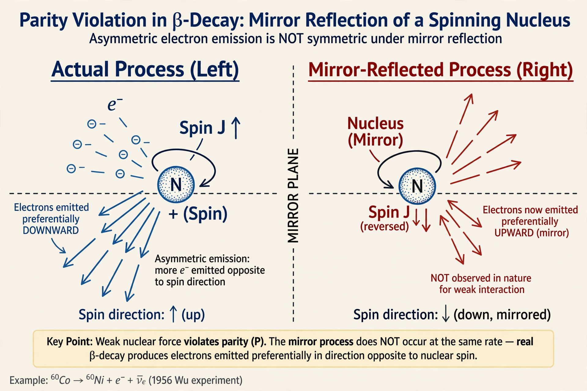

| Parity | |
|---|---|
 | |
| Transformation | Spatial inversion: (x, y, z) → (−x, −y, −z) |
| Quantum number | Parity P = ±1 (intrinsic parity) |
| Conserved in | Electromagnetism, strong interaction, gravity |
| Violated by | Weak interaction (maximally) |
| Key experiment | Wu experiment (1956–57), cobalt-60 beta decay |
In physics, a parity transformation (also called parity inversion) is the flip in the sign of one spatial coordinate — equivalently, in three dimensions, the simultaneous inversion of all three coordinates, (x, y, z) → (−x, −y, −z). The parity operation P acts like a reflection through a mirror combined with a rotation. Physical systems that are unchanged by this transformation are said to have parity symmetry.
In quantum mechanics, wavefunctions that return to themselves under parity are even (eigenvalue +1) and those that change sign are odd (eigenvalue −1). Particles have an intrinsic parity: the photon has parity −1, while scalar (spin-0) particles are assigned +1. For the Dirac field, particles and antiparticles have opposite intrinsic parities. Whether interactions conserve parity is an experimental question for each fundamental force.
Until 1956, parity was assumed to be conserved in all interactions, an assumption challenged by the "tau–theta puzzle": two particles with apparently identical mass and spin decayed into states of opposite parity. Tsung-Dao Lee and Chen Ning Yang proposed that parity might be violated in weak interactions and suggested tests. In late 1956 and early 1957, Chien-Shiung Wu and collaborators observed that electrons from polarized cobalt-60 beta decay were emitted preferentially opposite the nuclear spin — a dramatic demonstration that the weak interaction violates parity maximally. Lee and Yang received the 1957 Nobel Prize in Physics. The discovery led to the V−A theory of weak interactions and the Standard Model, and to the combined symmetry CP and ultimately CPT.
Parity selection rules govern atomic and molecular spectroscopy: electric-dipole transitions occur only between states of opposite parity (the Laporte rule). Parity also underlies the classification of molecular orbitals and nuclear states.
See also: Wu experiment · CP violation · Symmetry in physics